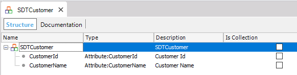
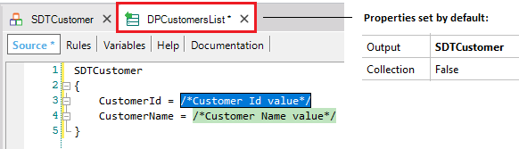
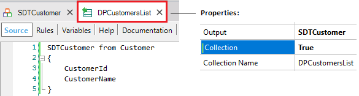
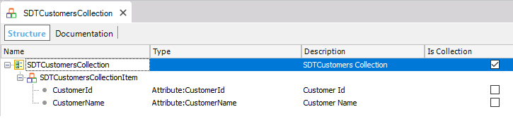
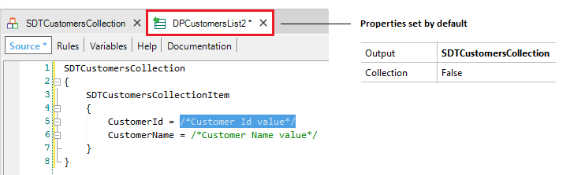
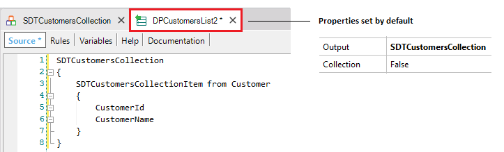

| False |
| True |
Objects: Data Provider
Generators: .NET, Android, Apple, Java
Suppose you define a Structured Data Type (SDT) and you drag that SDT to a Data Provider source. So, the Data Provider Output property is automatically set with the name of the SDT. This means that the Data Provider will return a loaded structure whose data type is based on that SDT and you have to receive the output (where you invoke the Data Provider) in a variable of the same type.
If the SDT is not a collection, but in the Data Provider your objective is to load and return a collection of that data type, you can set the Data Provider Collection property to True. Then, in the Data Provider source, you proceed loading several instances. Finally, the last thing you have to do is to receive where you invoke the Data Provider, the result returned by the Data Provider in a variable based on the SDT and it must be set as a collection.
In conclusion, this property allows without modifying the original SDT definition, to set that you want in a certain Data Provider to load and return multiple instances of the SDT definition.
The same applies for a Transaction that is Business Component. You can drag this kind of object to a Data Provider source, and the Data Provider Output property is automatically set with the name of the Business Component. But if your objective is to load and return a collection of that data type, you must set the Data Provider Collection property to True.
Unlike the case of the SDT, in which there is another alternative solution (defining the SDT as collection and dragging it to the Data Provider source, so the Output already is a collection), the only way to load and return several instances of a Business Component type using a Data Provider is by setting its property to True.
As already explained, in the Data Provider source, you have to load several instances of the Business Component type. Then, you must receive where you invoke the Data Provider, the result returned by the Data Provider in a variable based on the Business Component and it must be set as a collection. Finally, something important to take into account is that the object that calls the Data Provider must work with the result returned by the Data Provider, and execute the Insert method or the InsertOrUpdate method to perform the insertion(s) into the database.
This property applies only at design-time.
1) Samples about a Data Provider object that loads and returns an SDT collection
Consider the following Transaction:
Customer
{
CustomerId*
CustomerName
}
Below you can see two ways to load a collection of customers using a Data Provider object.
1.1) Suppose you define the following Structured Data Type which is not a collection:

Then, you create a DataProvider (DPCustomersList), and you drag the SDT to its source:

If your objective is to load all the registered customers, you can modify the Data Provider source and properties as shown:

Note that a Base Transaction was mentioned (Customer) in order to specify the navigation intention. Also, in this particular case, as the SDT properties names have the same names as the attributes it is not necessary to write explicitly the assignments.
To set that the Data Provider returns several instances, its Collection property must be set to True, as shown. In consequence, the Collection Name property is automatically added and completed by default with a name for the returned collection (you can update it).
1.2) Now, suppose you define the following Structured Data Type which is a collection:

Then, you create a DataProvider (DPCustomersList2) and you drag the SDT to its source:

Note that the Data Provider Output property is automatically set with the name of the SDT. This means that the Data Provider will return a loaded structure whose data type is based on that SDT. So, you will be loading and returning a collection and you do not need to alter the Collection property value.
You only have to complete the source and ready!

2) Sample about a Data Provider object that loads and returns a BC collection
See sample #4 explained in the Business Component Insert method article.
| Backlinks | ||
| Business Component samples | Collection Name property | Output property |